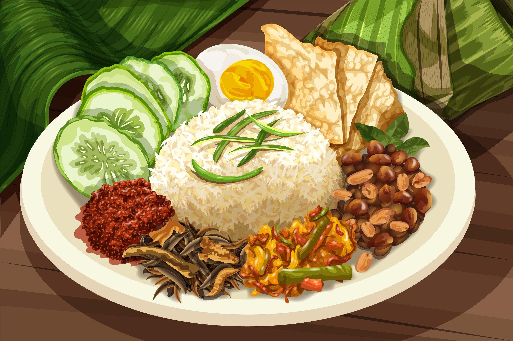
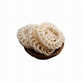
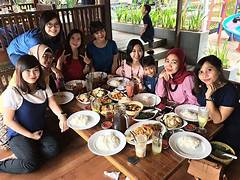

Galeri
Selamat datang di halaman Galeri kami! Di Kuliner Binjai, kami percaya bahwa setiap hidangan memiliki cerita untuk diceritakan, dan setiap momen kuliner layak diabadikan. Lihatlah koleksi foto-foto kami yang menampilkan berbagai kelezatan kuliner khas Binjai dan momen-momen istimewa yang kami bagikan bersama Anda.
Makanan Tradisional

Soto Binjai: Soto khas dengan kuah bening kaya rempah.

Gulai Patin: Ikan patin dalam kuah santan kental dengan bumbu rempah.
Nasi Lemak: Nasi dengan santan disajikan dengan lauk pauk khas.
Street Food

Martabak Mesir: Martabak dengan isian daging sapi cincang dan telur.
Kerupuk Kuyung: Kerupuk renyah dari campuran ikan dan udang.

Pisang Goreng Pasir: Pisang dengan lapisan tepung renyah.
Kuliner Modern

Ayam Geprek Keju: Ayam goreng crispy dengan lelehan keju mozzarella.

Pasta Sambal Matah: Pasta dengan bumbu sambal matah khas Bali.

Burger Rendang: Burger dengan patty rendang yang kaya rasa.
Minuman Spesial

Es Teh Tarik: Teh dengan susu kental manis dan es.

Jus Rambutan: Minuman segar dari buah rambutan asli Binjai.
Kopi Binjai: Kopi lokal dengan aroma kuat.
Dessert

Es Krim Durian: Es krim dengan rasa durian yang kuat.

Kue Lumpur: Kue tradisional dengan tekstur lembut dan rasa manis.

Puding Kelapa: Puding ringan dan segar dari air kelapa muda.
Acara dan Festival
Festival Kuliner Binjai: Suasana meriah di festival kuliner tahunan.

Demo Memasak: Chef berbagi resep dan teknik memasak di acara kami.

Komunitas Kuliner: Anggota komunitas berbagi pengalaman kuliner.
Pengalaman Pengunjung

Pengunjung di Restoran: Momen kebahagiaan pengunjung saat menikmati hidangan.
Keluarga Menikmati Makanan: Keluarga bersantap bersama di tempat favorit.

Teman-teman di Kafe: Sekumpulan teman bersantai di kafe.
Kami harap Anda menikmati galeri foto ini dan merasakan kelezatan serta kehangatan dari setiap momen yang kami tangkap. Jangan ragu untuk mengunjungi kami langsung dan membuat kenangan kuliner Anda sendiri di Binjai. Bagikan pengalaman Anda dengan kami di media sosial menggunakan hashtag #KulinerBinjai.